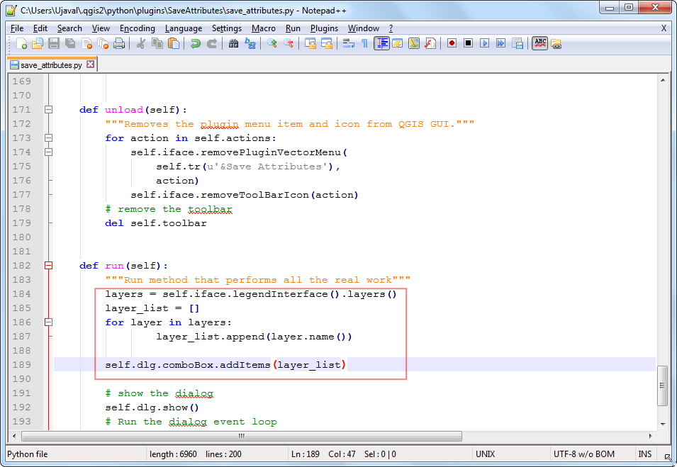
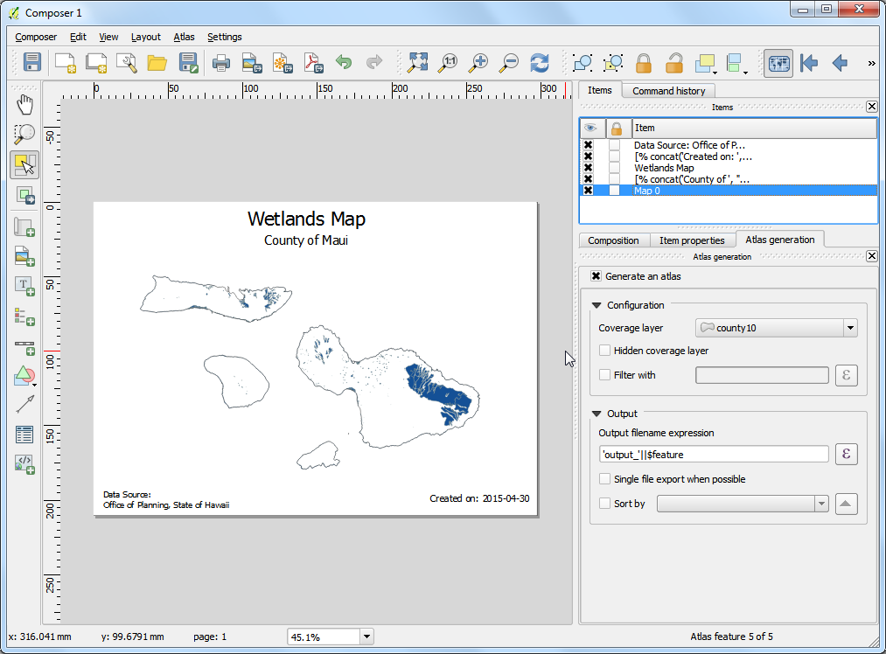
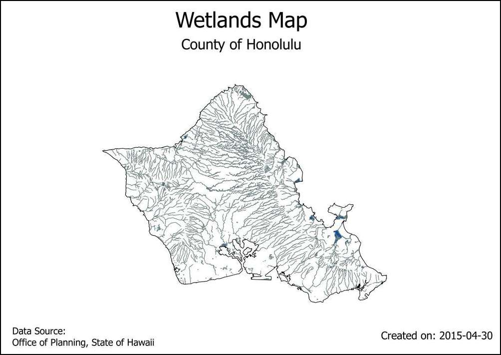

Automating Map Creation with Print Composer Atlas
[ Download PDF A4 Letter ]
If your organization publishes printed or online maps, you often would need to
create many maps with the same template - usually one for each administrative
unit or a region of interest. Creating these maps manually can take a long time
and if you want to update these on a regular basis, it can turn into a chore.
QGIS has a tool called Atlas that can help you create a map template and
easily publish a large number of maps for different geographic regions. If you
are not familiar with the basics of Print Composer, please go through the
Teemme kartan tutorial.
Overview of the task
This tutorial shows how to create wetlands map for each county in the state of
Hawaii.
Other skills you will learn
- How to use the Inverted Polygons style renderer to fill areas outside of polygons.
- How to use an expression in the Rule Based style renderer to show only
the current feature in Atlas.
- Apply expressions to create dynamic labels in Print Composer.
Procedure
- Launch QGIS and go to .

- Browse to the HI_Wetlands.shp.zip file and click Open.

- Select the HI_Wetlands_Poly layer and click OK.

- You will see the polygons representing the wetlands in the entire state of
Hawaii. Since we want to make separate wetlands map for each county in the
state, we will need the county boundaries layer. Go to and browse to the county10.shp.zip
file. Click Open.

- Go to .

- Leave the composer title field empty and click OK.

- Go to .

- Drag a rectangle while holding the left mouse button where you would like to
insert the map.

- Scroll down in the Item Properties tab and check the
Controlled by atlas box. This will indicate the composer that
the extent of the map displayed in this item will be determined by the
Atlas tool.

- Switch to the Atlas generation tab. Check the
Generate an atlas box. Select the county10 as the
Coverage layer. This will indicate that we want to create 1 map
each for every polygon feature in the county10 layer. You can also
check the Hidden coverage layer so that the features themselves
will not appear on the map.

- You will notice that the map image does not change after configuring the
Atlas settings. Go to .

- Now you will see the map refresh and show how individual map will look
like. Notice that it shows the current feature number from the coverage
layer at the bottom right.

- You can preview how the map will look for each of the county polygons. Go
to .

- Atlas will render the map to the extent of the next feature in the coverage
layer.

- Let’s add a label to the map. Go to .

- Under the Item properties tab, click Insert an
expression... button.

- The label of the map can use the attributes from the coverage layer.he
concat function is used to join multiple text items into a single text
item. In this case we will join the value of the NAME10 attribute of
the county10 layer with the text County of. Add an expression like
below and click OK.
concat('County of ', "NAME10")
- Adjust the font size to your liking.

- Add another label and enter Wetlands Map under the Main
properties. Since there is no expression here, this text will remain the
same on all maps.

- Go to and verify that the map
labels do work as intended. You will notice that the wetland map has
polygons extending out in the ocean that looks ugly. We can change the
style to that areas outside the county boundaries are hidden.

- Switch to the main QGIS window. Right-click the county10 layer and
select Properties.

- In the Style tab, select the Inverted polygons
renderer. This renderer styles the outside of the polygon - not inside.
Select white as the fill color and click OK.

- Switch to the Print Composer window. If we want the effect of the inverted
polygons to show, we need to uncheck the Hidden coverage layer
box under Atlas generation. You will now see that the rendered
image is clean and areas outside the coverage polygon is not visible.

- There is one problem though. You can see areas of the map that are outside
the coverage layer boundary but still visible. This is because Atlas
doesn’t automatically hide other features. This can be useful in some
cases, but for our purpose, we only want to show wetlands of the county
whose map is being generated. To fix this, switch back to the main QGIS
window and right-click the county10 layer and select
Properties.

- In the Style tab, select Rule-based renderer as the
Sub renderer. Double-click the area under Rule.

- Click the ... button next to Filter.

- In the Expression string builder, expand the Atlas
group of functions. The $atlasfeatureid function will return the
currently selected feature. We will construct an expression that will
select only the currently selected Atlas feature. Enter the expression as
below:

- Back in the Print Composer window, click the Update preview
button under Item properties tab to see the changes. Notice
that now only the area covering the county boundary is shown.

- We will now add another dynamic label to show the current date. Go to
and select the area on the map. Click
Insert an expression button.

- Expand the Date and Time functions group and you will find the
$now function. This holds the current system time. The function
todate() will convert this to a date string. Enter the expression as
below:
concat('Created on: ', todate($now))

- Add another label citing the data source. You may also add other map
elements such as a north arrow, scalebar etc. as described in
Teemme kartan tutorial.

- Once you are satisfied with the map layout, go to .

- Select a directory on your computer and click Choose.

- The Atlas tool will now iterate through each feature in the coverage layer
and create a separate map image based on the template we created. You can
see the images in the directory once the process completes.

- Here are the map images for refeence.
